Knowledge-based
Set of knowledge organized by theme.
Tools
Some cool tools I use/to use
Android
Path (USer land)
| Command | Description |
|---|---|
/data/data/<package name>/databases |
App databases |
/data/data/<package name>/shared_prefs/ |
Shared preferences |
| /mnt/sdcard/Download/ | Download folder |
| /data/app | Apk installed by user |
| /system/app | Pre-installed APK files |
| /mmt/asec | Encrypted apps (App2SD) |
| /mmt/emmc | Internal SD Card |
| /mmt/adcard | External/Internal SD Card |
| /mmt/adcard/external_sd | External SD Card |
Usefull docker
mingc/android-build-box An optimized docker image includes Android, Kotlin, Flutter sdk.
$ docker pull mingc/android-build-box
Android Debug Bridge (adb)
Package Installation
- Basic Command
- Some Activities
- Package Installation
- Path
- File Operations
- Phone Info
- Package Info
- Device Related Commands
- Intents
- Log
- Permissions
- System Informations
- Proxy
- Input & Actions
- Start activities
- Shell process management
- Optimize for Doze and App Standby
- Service
Basic Command
| Command | Description |
|---|---|
| adb devices | Lists connected devices |
| adb connect 192.168.2.1 | Connects to adb device over network |
| adb root | Restarts adbd with root permissions |
| adb start-server | Starts the adb server |
| adb kill-server | Kills the adb server |
| adb reboot | Reboots the device |
| adb shell | Starts the backround terminal |
| adb devices -l | List of devices by product/model |
adb -s <deviceName> <command> |
Redirect command to specific device |
adb –d <command> |
Directs command to only attached USB device |
adb –e <command> |
Directs command to only attached emulator |
Package Installation
| Command | Description |
|---|---|
adb shell install <apk> |
Install app |
adb shell install <path> |
Install app from phone path |
adb shell install -r <path> |
Install app from phone path |
adb shell uninstall <name> |
Remove the app |
Path
| Command | Description |
|---|---|
adb shell ls |
List directory contents |
adb shell ls -s |
Print size of each file |
adb shell ls -R |
List subdirectories recursively |
adb shell pm path <package name> |
Get full path of a package |
| adb shell pm list packages -f | Lists all the packages and full paths |
| adb shell pm list packages | sed 's/.*://g' | Get all available packages |
File Operations
| Command | Description |
|---|---|
adb push <local> <remote> |
Copy file/dir to device |
adb pull <remote> <local> |
Copy file/dir from device |
run-as <package> cat <file> |
Access the private package files |
Phone Info
| Command | Description |
|---|---|
| adb get-statе | Print device state |
| adb get-serialno | Get the serial number |
| adb shell dumpsys iphonesybinfo | Get the IMEI |
| adb shell netstat | List TCP connectivity |
| adb shell pwd | Print current working directory |
| adb shell dumpsys battery | Battery status |
| adb shell pm list features | List phone features |
| adb shell service list | List all services |
adb shell dumpsys activity <package>/<activity> |
Activity info |
| adb shell ps | Print process status |
| adb shell wm size | Displays the current screen resolution |
Package Info
| Command | Description |
|---|---|
| adb shell list packages | Lists package names |
| adb shell list packages -r | Lists package name + path to apks |
| adb shell list packages -3 | Lists third party package names |
| adb shell list packages -s | Lists only system packages |
| adb shell list packages -u | Lists package names + uninstalled |
| adb shell dumpsys package packages | Lists info on all apps |
adb shell dump <name> |
Lists info on one package |
adb shell path <package> |
Path to the apk file |
Device Related Commands
| Command | Description |
|---|---|
| adb reboot-recovery | Reboot device into recovery mode |
| adb reboot fastboot | Reboot device into recovery mode |
| adb shell screencap -p "/path/to/screenshot.png" | Capture screenshot |
| adb shell screenrecord "/path/to/record.mp4" | Record device screen |
| adb backup -apk -all -f backup.ab | Backup settings and apps |
| adb backup -apk -shared -all -f backup.ab | Backup settings, apps and shared storage |
| adb backup -apk -nosystem -all -f backup.ab | Backup only non-system apps |
| adb restore backup.ab | Restore a previous backup |
| ------- | ----------- |
| adb shell am start -a android.intent.action.VIEW -d URL | Opens URL |
| adb shell am start -t image/* -a android.intent.action.VIEW | Opens gallery |
| adb shell monkey -p app.package.name -v 1 | Starts the specified package |
Intents
| Command | Description |
|---|---|
| am start -a android.intent.action.VIEW -d https://github.com | URI |
| am start -a "android.intent.action.SEND" --es "android.intent.extra.TEXT" "Hello World" -t "text/plain" | Mime Type and Extra string |
| am start -n "your.application.packagename/path.to.the.Activity" | Activity |
| am start -n "your.application.packagename/path.to.the.Activity" - e "key" "data" | Activity with extras |
| am startservice -n "com.example.application/.BackgroundService" | Service |
| am broadcast -a "android.intent.action.PACKAGE_FIRST_LAUNCH" -d "com.example.application" | Broadcast with Action |
am broadcast -a com.google.android.c2dm.intent.RECEIVE
-n <YOUR_PACKAGE_NAME>/<YOUR_RECEIVER_NAME>
-e "<EXTRA_KEY_1>" "<EXTRA_VALUE_1>"
-e "<EXTRA_KEY_2>" "<EXTRA_VALUE_1>"
|
Notification (1) |
(1) stackoverflow
Log
| Command | Description |
|---|---|
adb logcat [options] [filter] [filter] |
View device log |
| adb bugreport | Print bug reports |
| adb logcat | Starts printing log messages to stdout |
| adb logcat -g | Displays current log buffer sizes |
adb logcat -G <size> |
Sets the buffer size (K or M) |
| adb logcat -c | Clears the log buffers |
| adb logcat *:V | Enables ALL log messages (verbose) |
adb logcat -f <filename> |
Dumps to specified file |
Example
$ adb logcat -G 16M
$ adb logcat *:V > output.log
- Logcat for specific package name
$ adb logcat -c && adb logcat --pid=$(adb shell pidof -s fr.dghack2023.android_mirrors)
Permissions
| Command | Description |
|---|---|
| adb shell permissions groups | List permission groups definitions |
| adb shell list permissions -g -r | List permissions details |
System Informations
| Command | Description |
|---|---|
adb shell getprop ro.build.version.release |
Get Build Version of Release Mode |
adb shell getprop ro.product.cpu.abi |
Get current ABI |
Proxy
| Command | Description |
|---|---|
adb shell settings put global http_proxy <address>:<port> |
Set network proxy |
| adb shell settings put global http_proxy :0 | Disable network proxy |
Input & Actions
| Command | Description |
|---|---|
| adb shell input text S3cr37 && adb shell input keyevent 66 | Input text 'S3cr37' then press [ENTER] |
| adb shell input swipe 540 1600 540 100 150 | Swipe up (SCREEN not been closed) |
| adb shell input tap X Y | Click on screen at coordinate [X, Y] |
Start activities
| Command | Description |
|---|---|
| adb shell am start -n com.package.name/com.package.name.ActivityName | Throught package name (Manifest) |
| am start -a com.example.ACTION_NAME -n com.package.name/com.package.name.ActivityName | Intent-filter |
| adb shell monkey -p your.app.package.name 1 | Androiderson tips |
Shell process management
| Command | Description |
|---|---|
adb shell pidof -s fr.dghack2023.android_mirrors |
Get PID of application name (running) |
Optimize for Doze and App Standby
| Command | Description |
|---|---|
adb shell dumpsys |
|
adb shell dumpsys battery | grep powered |
Battery powered state |
adb shell dumpsys battery unplug |
Unplug battery |
adb shell dumpsys battery reset |
Reset battery |
adb shell dumpsys deviceidle |
Dump Doze mode info |
adb shell dumpsys deviceidle enable |
Enable Doze mode (may be required on Android Emulator) |
adb shell dumpsys deviceidle get light |
Get status of Light Doze mode |
adb shell dumpsys deviceidle get deep |
Get status of Deep Doze mode |
adb shell dumpsys deviceidle step light |
Enter Light Doze mode (should be called several times to pass all phases) |
adb shell dumpsys deviceidle step deep |
Enter Deep Doze mode (should be called several times to pass all phases) |
================================================================
Service
| Command | Description |
|---|---|
adb shell dumpsys activity service |
Allow to list running services |
adb shell dumpsys activity com.service.function |
Allow to know the services *com.service.function* status. |
============================================================
Get Screen state and locked state (To be verified)
adb shell service call trust 7
Android Apktool for Reverse Engineering
A tool for reverse engineering 3rd party, closed, binary Android apps. It can decode resources to nearly original form and rebuild them after making some modifications. It also makes working with an app easier because of the project like file structure and automation of some repetitive tasks like building apk, etc.
It is NOT intended for piracy and other non-legal uses. It could be used for localizing, adding some features or support for custom platforms, analyzing applications and much more.
Download and Documentation
Official Apktool Website{target=_blank}
How to Sign APK After Compile
In order to install modified APK on Android device, you need to sign it with a certificate. Android APK won't be signed by default. You need to sign it manually.
Install apksigner
apt install -y apksigner
Create certificate at the same folder you've compiled your modified APK
keytool -genkey -v -keystore keystore.jks -keyalg RSA -keysize 2048 -validity 10000
Enter A password (we will need it to singe the APK), enter any data you wish for the certificate information. At the end enter 'y' at the end to create the certificate.
Now we should have 2 files: your.apk, keystore.jks. The only step left is to singe the APK with new certificate.
apksigner sign --ks keystore.jks your.apk
When installing the APK you will be prompted with a warning of "unknown certificate" just hit Install.
Install and Create Emulators using AVDMANAGER and SDKMANAGER
TL;DR
For an emulator that mimics a Pixel 5 Device with Google APIs and ARM/x86_64 architecture:
- List All System Images Available for Download:
$ sdkmanager --list | grep system-images
- Install platform tools, build tools, android platform:
$ echo "yes" | sdkmanager "platform-tools" "build-tools;31.0.0" "platforms;android-31"
- Install system images:
$ echo "yes" | sdkmanager "system-images;android-31;google_apis;x86_64"
- Create Emulator:
echo "no" | avdmanager --verbose create avd \
--force \
--name "pixel_5_api30_google_atd_emulator" \
--package "system-images;android-31;google_apis;x86_64" \
--tag "google_atd" \
--abi "arm64-v8a" \
--device "pixel_5"
I recommend always using the new google_atd or aosp_atd images when possible. In my benchmarks, they are about 40% more efficient than the google_apis image.
Note: Available device (--device) list:
$ avdmanager list device
Passing in a device will make the Emulator settings (usually found in the ~/.android/avd/emulator.avd/config.ini file) try to mimic that device. It is not actually the device. But, certain settings like pixel density, resolution, memory, partition size, etc will be changed. Generally the lower resolution devices will be less taxing on your CPU resources on CI, and are preferred especially without GPU/Hardware acceleration.
- Run Emulator:
$ emulator @generic_api30_aosp_atd_emulator &
or
emulator @pixel_5_google_atd_emulator &
- Available adv
$ avdmanager list avd
Aliases
Add aliases to your ~/.zshrc or ~/.bashrc to run the emulators with parameters more easily.
alias pixel_5_wiped='emulator @pixel_5 -no-boot-anim -netdelay none -no-snapshot -wipe-data &'
Starting multiple emulators
You can pass the -read-only parameter when starting up an emulator
$ emulator @pixel_5 -read-only
to run multiple devices at the same time.
Other
- aosp_atd and google_atd system images are only available on x86 and ARM architecture at API level 30.
See also: https://android-developers.googleblog.com/2021/10/whats-new-in-scalable-automated-testing.html
$ sdkmanager --list | grep atd
system-images;android-30;aosp_atd;arm64-v8a | 1 | AOSP ATD ARM 64 v8a System Image
system-images;android-30;aosp_atd;x86 | 1 | AOSP ATD Intel x86 Atom System Image
system-images;android-30;google_atd;arm64-v8a | 1 | Google APIs ATD ARM 64 v8a System Image
system-images;android-30;google_atd;x86 | 1 | Google APIs ATD Intel x86 Atom System Image
ensure PATH is correct
(if studio is in /opt/android-studio, and SDKs etc under ~/Android/Sdk):
ANDROID_STUDIO_LOC=/opt/android-studio
ANDROID_SDK_ROOT=~/Android/Sdk
PATH=$ANDROID_SDK_ROOT/cmdline-tools/latest/bin:$ANDROID_STUDIO_LOC/bin:$ANDROID_SDK_ROOT/emulator:$ANDROID_SDK_ROOT/tools:$ANDROID_SDK_ROOT/platform-tools:$PATH
Docs
See: Google's Emulator CLI Documentation for more info.
See: Google's AVDManager Documentation for more info.
See: Google's SDKManager Documentation for more info.
AVDManager (Android Virtual Device Manager)
Android Emulator Crash
load libvulkan.so: failed
Go to emulator folder then change gpu mode:
$ cd $HOME/.android/avd/<EMULATOR-LABEL>.avd
$ sed -i 's/hw.gpu.mode = auto/hw.gpu.mode = guest/g' ./config.ini
Drozer
Drozer is a good tool for simulating a rogue application. F-Secure stopped its development, but it still can be used in your penetration test without any problems. From their GitHub page, there is an APK that should be installed on the device. The command is
$ adb install drozer-agent-2.3.4.apk
Drozer allows you to search for security vulnerabilities in apps and devices by assuming the role of an app and interacting with the Dalvik VM, other apps’ IPC endpoints, and the underlying OS. Even though it is decommissioned and out of development, I still use it as a go-to tool when it comes to mobile pentesting. More details can be found on their GitHub.
$ wget https://github.com/WithSecureLabs/drozer/releases/download/2.4.4/drozer_2.4.4.deb
$ sudo dpkg -i drozer-2.4.4.deb
Frida
Frida Tools
frida-ps
- Get the list of running processes/applications
# -U option for USB devices or emulators
$ frida-ps -U
- Get the list of installed applications with -i option
$ frida-ps -U -i
Frida CLI
- By default, Frida tries to attach to a running process
$ frida -U com.android.chrome
- To spawn an application, use the -f option as follow
$ frida -U -f com.android.chrome
- By default, the process is paused
$ frida -U -f com.android.chrome --no-pause
Frida Scripting
-
Python bindings are provided with Frida
- However, the hooks need to be written in JavaScript :(
-
Here are the basics Frida functions
- Java.perform(function() {//your code here});
- Perform code instrumentation inside the Java code
- Java.use(class_name)
- Use a specific Java class
- overload
- Overload a specific method (functions with different prototypes)
- implementation
- Tamper the implementation of the selected method
- Java.perform(function() {//your code here});
-
The most convenient way is to use scripts
$ frida -U -l myscript.js com.android.chrome
- Here is an example allowing to hook the onCreate function
Java.perform(function () {
// Declare the Activity class as a variable
var Activity = Java.use("android.app.Activity");
// Hook the onCreate function
Activity.onCreate.implementation = function () {
console.log("[*] onCreate() got called!");
this.onCreate();
};
});
- When spawning an application, it is recommended to use Java.available as follow
- Sometimes the JVM is not ready, and the script failed to execute
if(Java.available) {
Java.perform(function () {
// your code here
};
}
- To print debug messages, you can use those functions
$ send(message)
$ console.log(line) / console.warn(line) / console.error(line)
Reference
- Cheat Sheet
- Awesome Frida scripts
- Learning Frida
Frida setup
Frida can installed :
- Rooted device(s)
- Not rooted device(s)
- Emulator(s)
Setup python modules
Sous python 3.9 et plus
# Pyenv or venv
$ pip install frida-tools
$ pip install frida
Get Frida server
VER=`frida --version`
ABI=`adb shell getprop ro.product.cpu.abi`
wget https://github.com/frida/frida/releases/download/$VER/frida-server-$VER-android-$ABI.xz
xz -d frida-server-$VER-android-$ABI.xz
mv frida-server-* frida-server
Where :
VERSIONis the last version (16.0.19 at Apr 27 2023)PLATFORMis one of [android|windows|linux]. This is the device target.ARCHIis [arm|arm64|x86|x86_64|armeabi]
Get Frida gadget
VER=`frida --version`
ABI=`adb shell getprop ro.product.cpu.abi`
wget https://github.com/frida/frida/releases/download/$VER/frida-gadget-$VER-android-$ABI.so.xz
xz -d frida-server-$VER-android-$ABI.xz
mv frida-server-* frida-server
Where :
VERSIONis the last version (16.0.19 at Apr 27 2023)PLATFORMis one of [android|windows|linux]. This is the device target.ARCHIis [arm|arm64|x86|x86_64|armeabi]
Run frida server
# Restart root
$ adb root
adbd is running as root
$ adb push frida-server /data/local/tmp/
frida-server: 1 file pushed, 0 skipped. 318.4 MB/s (112503224 bytes in 0.337s)
$ adb shell "chmod 755 /data/local/tmp/frida-server"
$ adb shell "/data/local/tmp/frida-server -D &"
Get running process list
# List packages and processes
$ frida-ps -U
# Get all the package name
$ frida-ps -U | grep -i <part_of_the_package_name>
Run client script
frida -U -l <script>.js -f <package_name>
Inject Frida's Gadget under Android: Not rooted device
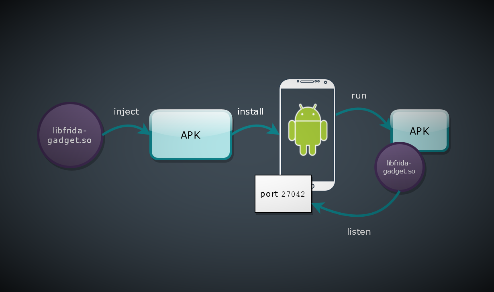
You have 2 options to inject Frida's Gadget to Android application:
-
Method 1: If targeted APK contains any native library (
<apk>/lib/arm64-v8a/libfromapk.so), then you can inject libfrida-gadget.so as a dependency into the native library. -
Method 2: If APK doesn't contain a native library, then you can inject
System.loadLibrarybytecode.Only method 1 will be used here
Method 1 : Inject a libfrida-gadget.so as a dependency to a native library (JNI) inside of APK
The used APK coming from github project cdroid where 2 APK were generated :
- first with "android.permission.INTERNET"
- second without this permission.
Basically, you need this article: How to use frida on a non-rooted device - LIEF.
- Download and unpack frida-gadget >= 12.8.8 for Android for arm64
!!! les versions 12.7.0 à 12.8.7 ne parviennet pas à contacter le serveur Issue#286.
$ wget https://github.com/frida/frida/releases/download/16.1.4/frida-gadget-16.1.4-android-arm64.so.xz
$ unxz -d frida-gadget-16.1.4-android-arm64.so.xz
- Unpack APK
$ apktool d -rs <target>.apk
- Use apktool >= 2.4.1.
-rsis to not decode resources and sources, it will save you time and keep your nerves while compiling the APK back.- unzip/zip doesn't always work - application may not bring up.
- Copy frida-gadget to the unpacked APK directory.
$ cp frida-gadget-16.1.4-android-arm64.so target/lib/arm64-v8a/libfrida-gadget.so
- Patch library with the following script
#!/usr/bin/env python3
import lief
libnative = lief.parse("target/lib/arm64-v8a/libfromapk.so")
libnative.add_library("libfrida-gadget.so") # Injection!
libnative.write("target/lib/arm64-v8a/libfromapk.so")
- Check the injection succeeded.
$ readelf -d target/lib/arm64-v8a/libfromapk.so
Dynamic section at offset 0xb2220 contains 30 entries:
Tag Type Name/Value
0x0000000000000001 (NEEDED) Shared library: [libfrida-gadget.so]
...
- Re-pack APK.
apktool b <target>
&. Sign APK
used "Uber APK signer": uber-apk-signer
$ java -jar uber-apk-signer-1.1.0.jar -a ./target/dist/target.apk
- Install l'APK
$ adb install -r -g <apk_file>.apk
Check frida-gadget
- Print log
$ adb logcat | grep -i frida
XX-XX XX:XX:XX.XXX 17595 17618 I Frida : Listening on 127.0.0.1 TCP port 27042
- Check openning port
$ adb shell netstat -ln | grep 27042
tcp 0 0 127.0.0.1:27042 0.0.0.0:* LISTEN
Frida
Frida Setup
Sous python 3.9 et plus
Setup python modules
# Pyenv or venv
$ pip install frida-tools
$ pip install frida
Get Frida server
$ wget https://github.com/frida/frida/releases/download/VERSION/frida-server-VERSION-PLATFORM-ARCHI.xz
Where :
VERSIONis the last version (16.0.19 at Apr 27 2023)PLATFORMis one of [android|windows|linux]. This is the device target.ARCHIis [arm|arm64|x86|x86_64|armeabi]
Example:
For Pixel 5, Android 12, API 31 emulator (from Android studio).
$ wget https://github.com/frida/frida/releases/download/16.0.19/frida-server-16.0.19-android-x86_64.xz
$ xz --decompress frida-server-16.0.19-android-x86_64.xz
$ mv frida-server-* frida-server
Run frida server
# Restart root
$ adb root
adbd is running as root
$ adb push frida-server /data/local/tmp/
frida-server: 1 file pushed, 0 skipped. 318.4 MB/s (112503224 bytes in 0.337s)
$ adb shell "chmod 755 /data/local/tmp/frida-server"
$ adb shell "/data/local/tmp/frida-server -D &"
Get running process list
# List packages and processes
$ frida-ps -U
# Get all the package name
$ frida-ps -U | grep -i <part_of_the_package_name>
Run client script
frida -U -l <script>.js -f <package_name>
Android Emulator/Frida
Inspired from Lairue Wired
Docker
- Docker pul
docker pull budtmo/docker-android:latest
- Docker run
# docker run --privileged -d -p 6080:6080 -p 5554:5554 -p 5555:5555 -e DEVICE="Samsung Galaxy S6" --name android-container budtmo/docker-android-x86-8.1
$ docker run -d -p 6080:6080 -p 5554:5554 -p 5555:5555 -e EMULATOR_DEVICE="Samsung Galaxy S10" -e WEB_VNC=true --device /dev/kvm --name android-container budtmo/docker-android:latest
- Connect to shell
➜ adb connect 127.0.0.1:5555
* daemon not running; starting now at tcp:5037
* daemon started successfully
connected to 127.0.0.1:5555
➜ adb -s 127.0.0.1:5555 shell
emu64xa:/ $
➜ adb -s 127.0.0.1:5555 root
restarting adbd as root
➜ adb -s 127.0.0.1:5555 shell
emu64xa:/ #
Setup Frida
➜ pip show frida
Name: frida
Version: 16.1.4
Summary: Dynamic instrumentation toolkit for developers, reverse-engineers, and security researchers
Home-page: https://frida.re
Author: Frida Developers
Author-email: oleavr@frida.re
License: wxWindows Library Licence, Version 3.1
Location: /home/user/.pyenv/versions/3.10.10/envs/frida_env/lib/python3.10/site-packages
Requires: typing-extensions
Required-by: frida-tools
- For the emulator => Frida server
x86
➜ unxz frida-server-16.1.4-android-x86_64.xz
➜ adb -s 127.0.0.1:5555 push frida-server-16.1.4-android-x86_64 /data/local/tmp
frida-server-16.1.4-android-x86_64: 1 file pushed, 0 skipped. 46.9 MB/s (51624572 bytes in 1.050s)
➜ adb -s 127.0.0.1:5555 shell
emu64xa:/ # cd /data/local/tmp
127|emu64xa:/data/local/tmp # ls
frida-server-16.1.4-android-x86_64
128|emu64xa:/data/local/tmp # chmod +x ./frida-server-16.1.4-android-x86_64
➜ adb -s 127.0.0.1:5555 shell /data/local/tmp/frida-server-16.1.4-android-x86_64 -D &
[1] 690322
➜ adb -s 127.0.0.1:5555 shell
1|emu64xa:/ # netstat -tlp
Active Internet connections (only servers)
Proto Recv-Q Send-Q Local Address Foreign Address State PID/Program Name
tcp 0 0 localhost:27042 0.0.0.0:* LISTEN 6435/frida-server-16.1.4-android-x86_64
tcp 0 0 10.0.2.16:43826 par10s41-in-f4.1e:https CLOSE_WAIT 2550/com.google.android.googlequicksearchbox:search
tcp 0 0 10.0.2.16:41458 par10s41-in-f4.1e:https CLOSE_WAIT 2550/com.google.android.googlequicksearchbox:search
tcp6 0 0 [::]:5555 [::]:* LISTEN 6152/adbd
tcp6 0 0 ::ffff:10.0.2.16:46468 wl-in-f188.1e100.n:5228 ESTABLISHED 5168/com.google.android.gms.persistent
Frida quick start
- Running process list
frida-ps -U
- Running application
frida-ps -Ua
- Attach to a process
➜ frida-ps -Ua
PID Name Identifier
---- ----------- ---------------------------------------
2550 Google com.google.android.googlequicksearchbox
2550 Google com.google.android.googlequicksearchbox
5482 Messages com.google.android.apps.messaging
1581 Phone com.google.android.dialer
6074 Photos com.google.android.apps.photos
1085 SIM Toolkit com.android.stk
6041 Settings com.android.settings
6499 YouTube com.google.android.youtube
➜ frida -U Youtube
____
/ _ | Frida 16.1.4 - A world-class dynamic instrumentation toolkit
| (_| |
> _ | Commands:
/_/ |_| help -> Displays the help system
. . . . object? -> Display information about 'object'
. . . . exit/quit -> Exit
. . . .
. . . . More info at https://frida.re/docs/home/
. . . .
. . . . Connected to sdk gphone x86 64 (id=127.0.0.1:5555)
[sdk gphone x86 64::Youtube ]-> Exit
Sample
- Name: Android
- SHA256: c81234b6ceb3572c6d862a9313e019b98efd83165d8c085bd3e74971c66763bb
- ZIP password: infected
Script to hook
Java.perform(() => {
const wwuClass = Java.use('com.first.smoke.WWuToNtMwQcZlXnFwNx');
wwuClass.arrivesample.implementation = function () {
send('arrivesample() got called! Let\'s call the original implementation');
var retValue = this.arrivesample();
send('arrivesample() got called! Let\'s call the original implementation');
return retValue;
};
});
Frida Snippet Code
Skeleton
if (Java.available) {
Java.perform(function() {
# Code python
}
}
Methods call
- Static method
var BasicTypes = Java.use("com.blog.testfrida.examples.BasicTypes");
BasicTypes.divideFloat(23,3);
- Non static method
// Class reference
var Person = Java.use("com.blog.testfrida.complexobjects.Person");
// Create instance
var personInstance = Person.$new();
- Send string parameters to function
var String = Java.use("java.lang.String");
personInstance.setName(String.$new("Peter Griffin"));
Overridden methods
Here is overridden methods:
public static int multiply(int val1, int val2) {
return val1 * val2;
}
public static byte multiply(byte val1, byte val2) {
return (byte) (val1 * val2);
}
- Use in javascript will be:
var BasicTypes = Java.use("com.blog.testfrida.examples.BasicTypes");
console.log(BasicTypes.multiply(3,5));
Frida solves the method by the argument types.
- Override methods
var BasicTypes = Java.use("com.blog.testfrida.examples.BasicTypes");
console.log(BasicTypes.multiply(3,5));
// Failed to used this methods: which ones we are overridern
// BasicTypes.multiply.implementation = function (val1, val2) {
// console.log("it works");
// return val1 * val2;
//}
BasicTypes.multiply.overload('int','int').implementation = function (val1, val2) {
return val1 * val2;
}
Trace class
List all overwritten methods and get count
function traceClass(targetClass) {
var hook;
try {
hook = Java.use(targetClass);
} catch (e) {
console.error("trace class failed", e);
return;
}
var methods = hook.class.getDeclaredMethods();
hook.$dispose();
var parsedMethods = [];
methods.forEach(function (method) {
var methodStr = method.toString();
var methodReplace = methodStr.replace(targetClass + ".", "TOKEN").match(/\sTOKEN(.*)\(/)[1];
parsedMethods.push(methodReplace);
});
uniqBy(parsedMethods, JSON.stringify).forEach(function (targetMethod) {
traceMethod(targetClass + '.' + targetMethod);
});
}
function traceMethod(targetClassMethod) {
var delim = targetClassMethod.lastIndexOf('.');
if (delim === -1)
return;
var targetClass = targetClassMethod.slice(0, delim);
var targetMethod = targetClassMethod.slice(delim + 1, targetClassMethod.length);
var hook = Java.use(targetClass);
var overloadCount = hook[targetMethod].overloads.length;
console.log(targetClassMethod + " (overloadCount: " + overloadCount + ")");
}
// remove duplicates from array
function uniqBy(array, key) {
var seen = {};
return array.filter(function (item) {
var k = key(item);
return seen.hasOwnProperty(k) ? false : (seen[k] = true);
});
}
- Usage
traceClass("java.lang.String");
List overwritten methods
function listOverritenMethods(className, func) {
var Class = Java.use(className);
var overloadedMethods = Class[func].overloads;
for (var i in overloadedMethods) {
console.log(overloadedMethods[i]);
}
}
- Usage
listOverritenMethods("java.lang.String", "getBytes");
Function substitution
- Code that detect 'root'
protected void onCreate(Bundle paramBundle)
{
if (sg.vantagepoint.a.c.c()) {
a("Root detected!");
}
...
- Frida Script
Java.perform(function () {
let theClass = Java.use("sg.vantagepoint.a.c");
theClass.a.implementation = function(v) {
console.log("In function A");
return false
}
})
or
Java.perform(function () {
let MainActivity = Java.use("sg.vantagepoint.uncrackable.MainActivity");
MainActivity.a.overload('java.lang.String').implementation = function (str) {
console.log(`MainActivity.a is called: str=${str}`);
};
})
Decode bytes to string
// Helper function to decode byte[] to String
function arrToStr(byteArr) {
var tmp = "";
for (var k = 0; k < byteArr.length; k++) {
tmp += String.fromCharCode(byteArr[k]);
}
return tmp;
}
Exported, imported and symbols from module
- Lists all names (exports, imports and symbols) in the given module. If a 'needle' is given this function returns the address of the name that matches the 'needle'
function listNames(module, needle) {
var address = undefined;
Process.enumerateModules()
.filter(function (m) { return m["path"].toLowerCase().indexOf(module) != -1; })
.forEach(function (mod) {
mod.enumerateExports().forEach(function (entry) {
console.log("Export: " + entry.name);
if (entry.name.indexOf(needle) != -1) address = entry.address;
});
mod.enumerateImports().forEach(function (entry) {
console.log("Import: " + entry.name);
if (entry.name.indexOf(needle) != -1) address = entry.address;
});
mod.enumerateSymbols().forEach(function (entry) {
console.log("symbol name: " + entry.name);
if (entry.name.indexOf(needle) != -1) address = entry.address;
});
});
console.log("");
return address;
}
Hook function in library
- An
libfoo.sousestrncmpfunction.
function listNames(module, needle) {
var address = undefined;
Process.enumerateModules()
.filter(function (m) { return m["path"].toLowerCase().indexOf(module) != -1; })
.forEach(function (mod) {
mod.enumerateExports().forEach(function (entry) {
if (entry.name.indexOf(needle) != -1) address = entry.address;
});
mod.enumerateImports().forEach(function (entry) {
if (entry.name.indexOf(needle) != -1) address = entry.address;
});
mod.enumerateSymbols().forEach(function (entry) {
if (entry.name.indexOf(needle) != -1) address = entry.address;
});
});
return address;
}
function attachToStrncmp(strncmpAddress, compareTo) {
Interceptor.attach(strncmpAddress, {
onEnter: function (args) {
var len = compareTo.length;
if (args[2].toInt32() != len) {return;}
var str1 = args[0].readUtf8String(len)
var str2 = args[1].readUtf8String(len)
if (str1 == compareTo || str2 == compareTo) {
console.log("strncmp(" + str1 + ", " + str2 + ", " + len + ") called");
}
},
});
}
Java.perform(function () {
Java.use("<MODULE>.MainActivity").onResume.implementation = function () {
this.onResume();
// Hook to strncmp and look for any calls to it with the magic word as argument
var watchDog = <STRING_UNIQUE_2_DISTNGUISHED_CALL>;
var strncmp_addr = listNames('libfoo.so', 'strncmp')
attachToStrncmp(strncmp_addr, theMagicWord);
// Find the CodeCheck instance that was created by the app in onCreate()
// Then call it with the magic word as argument.
Java.choose("CLASS_MODULE", {
onMatch: function (instance) {
instance.<FCT_IN_CLASS>(
Java.use("java.lang.String").$new(watchDog)
);
return "stop"; // return 'stop'
},
onComplete: function () { }
});
// We've got what we wanted, detach again to prevent multiple attachments
// to strncmp if onResume is called multiple times.
Interceptor.detachAll();
}
})
Other Snippet
Frida Tutorials
hacktricks
Android Hacking with FRIDA
Ref
UnCrackable Mobile Apps
These are the UnCrackable Apps for Android and iOS, a collection of mobile reverse engineering challenges. These challenges are used as examples throughout the OWASP MASTG. Of course, you can also solve them for fun.
See https://mas.owasp.org/crackmes for more information.
Gnirehtet (tethering)
Usage
- Install
cd /tmp
wget "https://github.com/Genymobile/gnirehtet/releases/download/v2.3/gnirehtet-rust-linux64-v2.3.zip"
unzip ./gnirehtet-rust-linux64-v2.3.zip
cd gnirehtet-rust-linux64
./gnirehtet install
- Run
$ ./gnirehtet run
Ref.
-
Introducing “gnirehtet”, a reverse tethering tool for Android
-
Gnirehtet 2: our reverse tethering tool for Android now available in Rust
Docker
docker images # list images
docker pull <img:tag> # pull a certain image
docker run -it <img:tag> <command> # run a command in a new container (interactively)
docker ps -as # list all containers
docker exec -it <container-id> <command> # run a command in a running container
docker container prune # delete all containers
docker inspect <container-id> # show low-level info on a container
docker commit <container-id> <repository:tag> # create a new image from container changes
# Networks managing: None, Host, Bridge (default)
docker network create --driver <driver> --subnet x.x.x.x/x --gateway x.x.x.x <network-name> # create a new network
docker network connect <network-name> <container-id> [--ip x.x.x.x] # connect a container to a network (and changing the default ip)
docker rmi $(docker images|grep none|awk '{ print $3 }') # remove docker images with tag or name at none
Docker volumes
flowchart TB A[Container]--bind out -->B subgraph B[Filesystem] D[ContainerData] end A--volume -->D A--tmpfs mount -->C[Memory]
docker volume create <volume-name> # create a volume
docker inspect <volume-name> # to get the mount point on the host
docker run -itd --mount src=<volume-name>,target=/some/path --name <container-name-to-create> --rm <image-name> # mount a volume on the container
Manage image size
docker image history <image-name> -notrunc # know the size and layers of an image
Multi-stage Build: allows to reduce the final size of a docker image by performing some operations before creating the final image (e.g. compiling the source code)
Choose your base image:
- alpine
- debian
- scratch
- busybox:glibc (useful if the program is dynamic)
C_GO_ENABLED=0: Go doesn't use system libraries anymore but its own implementations so it becomes static (net and dns for example)
Alpine uses musl but there is the possibility to install build-base
The others use glibc. The 2 are not compatible (i.e. compiling on glibc and running on alpine will not work)
Docker Forensic
-
Dive: exploring image, layer, contents
-
LiME: Linux Memory Extractor
Docker-compose
docker-compose up --build -d # run, build and keep detach
docker-compose stop/down
To get further
- Kubernetes
- Skaffold
- Kustomize
Dockerfile
Multi-stage build
Get a minimalist container simply running a binary. This helps keep the running docker container small while still be able to compile a project needing a lot of dependencies.
# Step 1
FROM golang:alpine3.7 as build-env # Create an alias
COPY main.go /hello/main.go
WORKDIR /hello
RUN env GOOS=linux GOARCH=amd64 go build
# Step 2
FROM scratch
COPY --from=build-env /hello/hello /bin/hello # copy the compiled file from the build-env image
ENTRYPOINT ["/bin/hello"]
docker build -t hello-scratch:v1 . # build your image with the Dockerfile in the current directory
docker images # check you have your newly created image
docker run hello-scratch:v1 # run your image
Official documentation for the multi-stage
Git
- Cancel last local commit
git reset HEAD~1
-Remove a file from the index without deleting it
git reset HEAD <filename> # does not delete the file but removes it from the index
- Create new branch
git branch <branchName> # locally
# upstream branch
git branch --set-upstream-to=origin/<branchName>
git push -u origin <branchName>
- Merge some commits together
git rebase -i HEAD~X
# X = number of commits to merge
# 1. make your modification
# 2. if commits were already pushed: git push --force
# 3. else: git push
- Unstagged files and change active branch
git stash push -m "message"
git stash list
git checkout <another branch>
git stash pop
- Delete file from git history
git filter-branch --index-filter "git rm -rf --cached --ignore-unmatch <path-to-file>" HEAD
git push -all --force
- Find file in git history
git log --all --full-history -- <path-to-file>
- Apply commits on another branch
git cherry-pick <commit-hash>
- Add & push tags
git tag <tag-name>
git push --tags
- Use GIT with a GUI
gitk --all
GraphViz
- File to PNG
dot </path/tp/file/dot> -Tpng -o output.png
Reference
- Sketchviz - Graphviz Examples
- Sketchviz - Guide to Flowcharts in Graphviz
- GraphViz Pocket Reference
- Drawing graphs with dot (pdf)
GraphViz
Simple command
- With
graphivizpython module
import graphviz
dot_data = """
// The Round Table
digraph {
A [label="King Arthur"]
B [label="Sir Bedevere the Wise"]
L [label="Sir Lancelot the Brave"]
A -> B
A -> L
B -> L [constraint=false]
}
"""
graph = graphviz.Source(dot_data)
graph
- With command line
!dot -Tpng ./assets/source.dot -o ./assets/source.png
Some examples
Basic
- graph
No direction
graph {
hello -- world;
}
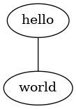
- digraph
oriented graph
graph {
hello -> world;
}
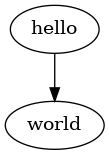
- digraph oriented AND edge in color
digraph {
rankdir=LR;
hello [ label = "Hello" ];
hello -> world [ color="orange", penwidth=3.0 ];
}
- digraph with font
digraph {
Tinos [ fontname="Tinos" ];
Handlee [ fontname="Handlee" ];
"Sedgwick Ave" [ fontname="Sedgwick Ave" ];
"*also Sedgwick*";
}
- digraph custom edge
digraph {
node [ shape=square ];
edge [ style=dashed ];
see -> think -> do;
}
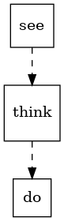
Simple Graph
graph {
a -- b;
b -- c;
c -- d;
d -- e;
e -- f;
a -- f;
a -- c;
a -- d;
a -- e;
b -- d;
b -- e;
b -- f;
c -- e;
c -- f;
d -- f;
}
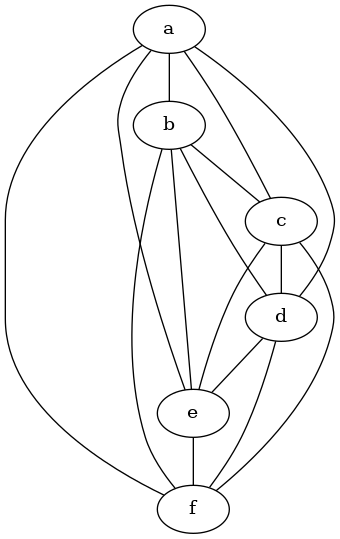
Full digraph
import graphviz
dot_data = """
digraph {
a -> b[label="0.2",weight="0.2"];
a -> c[label="0.4",weight="0.4"];
c -> b[label="0.6",weight="0.6"];
c -> e[label="0.6",weight="0.6"];
e -> e[label="0.1",weight="0.1"];
e -> b[label="0.7",weight="0.7"];
}
"""
graphviz.Source(dot_data)
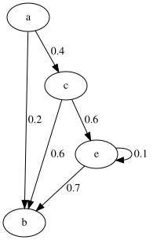
Showing A path
import graphviz
dot_data = """
graph {
a -- b[color=red,penwidth=3.0];
b -- c;
c -- d[color=red,penwidth=3.0];
d -- e;
e -- f;
a -- d;
b -- d[color=red,penwidth=3.0];
c -- f[color=red,penwidth=3.0];
}
"""
graphviz.Source(dot_data)
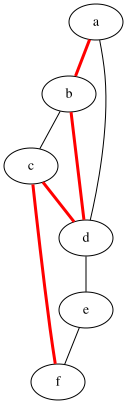
Subgraph
import graphviz
dot_data = """
digraph {
subgraph cluster_0 {
label="Subgraph A";
a -> b;
b -> c;
c -> d;
}
subgraph cluster_1 {
label="Subgraph B";
a -> f;
f -> c;
}
}
"""
graphviz.Source(dot_data)
Complex digraph
import graphviz
dot_data = """
digraph G {
size ="4,4";
main [shape=box]; /* this is a comment */
main -> parse [weight=8];
parse -> execute;
main -> init [style=dotted];
main -> cleanup;
execute -> { make_string; printf}
init -> make_string;
edge [color=red]; // so is this
main -> printf [style=bold,label="100 times"];
make_string [label="make a\nstring"];
node [shape=box,style=filled,color=".7 .3 1.0"];
execute -> compare;
}
"""
graphviz.Source(dot_data)
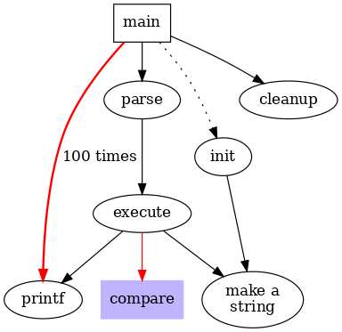
Complex label
digraph G {
a -> b -> c;
b -> d;
a [shape=polygon,sides=5,peripheries=3,color=lightblue,style=filled];
c [shape=polygon,sides=4,skew=.4,label="hello world"]
d [shape=invtriangle];
e [shape=polygon,sides=4,distortion=.7];
}
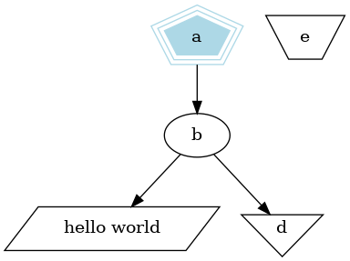
Advanced Graphs
Edge connection
Use <angle-brackets> to connect edge
digraph {
rankdir=LR;
node [ shape=record ];
struct1 [
label = "a|b|<port1>c";
];
struct2 [
label = "a|{<port2>b1|b2}|c";
];
struct1:port1 -> struct2:port2 [ label="xyz" ];
}
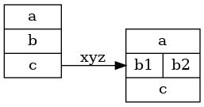
Clusters (or subgraph)
You can group related nodes by putting them in a subgraph whose name begins with cluster_.
digraph {
node [ fontname="Handlee" ];
subgraph cluster_frontend {
label="*Frontend*";
React;
Bootstrap;
}
subgraph cluster_backend {
label="*Backend*";
expressjs;
"aws-sdk";
}
React -> expressjs;
expressjs -> "aws-sdk";
}
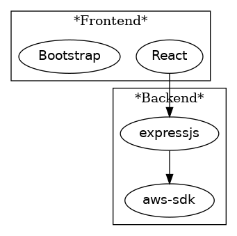
Some linux command
Use Stream EDitor (SED)
Find and replace text within a file using sed command
sed -i 's/old-text/new-text/g' input.txt
-ito update file passsis the substitute command of sed for find and replacegmeans global replace i.e. find all occurrences
sed -i 's/foo/bar/gI' input.txt
Ito match all cases of foo (foo, FOO, Foo, FoO) add I (capitalized I) option
Install Oh My zsh
Convert Oh My Zsh – guide complet : installation rapide sous Linux
Bash tips
touch file into sub unexisting folder
$ file="./nested/folder/deep/more.txt"
$ mkdir -p "${file%/*}" && touch "$file"
Where
$ file="./nested/folder/deep/more.txt"
$ echo "${file%/*}" # dirname ${file}
./nested/folder/deep
$ echo "$file"
Possible function:
$ mktouch() {mkdir -p $(dirname $1) && touch $1;}
Natural Referencing
The domain name
- avoid
-which are considered as penalizing - it's better without offensive words and easy to spell
- the size of the domain name must be about 9 words
- register your domain name for 1 year or less is characterized as suspicious
- a valid SSL certificate is better
Page construction
- you need keywords related to your site
- the content of the pages must be relevant and organized
- if the speed of loading the page is long ( Ex: images too heavy) your site will be less well referenced
- it is preferable to have a qualitative code
- feature snippets: this is a portion of text that directly answers a question asked in the search engine. Indeed, it is an extract that leads the user to click on the page to get the full content. Try the site Answer The Public to know what people are looking for on Google (could be interested to look for your keywords).
Backlinks
Links that lead to your website. For Google, if a site has many backlinks, it is a popular and quality site. It also takes into account the age of the domain name that makes the incoming link. Indeed, there is a difference between Wikipedia and a site that is a few months old.
It takes into account the link that redirects to your site.
- the complete site (https://your-own-site.com), the complete site is considered of quality
- a specific page of your site (https://your-own-site.com/a/very/specific/page/somewhere/in/your/site), there is only one interesting content.
User loyalty
- The more time they spend on the site, the better.
- Encourage users to comment on content. Many comments involve a topic of interest, so users will return to the site to see the responses (⚠️ to moderation).
Web Scrapping
Frameworks
- BeautifulSoup
- MechanicalSoup
- Scrapy
- Photon → collection of URLs, files, specific data (emails, social networks)
- Puppeteer
Puppeteer
Allows to drive a chromium instance (works with nodejs).
- automate tasks (forms, data monitoring)
- browse web pages (tests, scrapping)
- make screenshots or export web pages to PDF
- capture a chronological trace of a site to diagnose performance problems
- test chrome extensions
- possibility to display the window to follow the navigation
- dev chrome tools →
Recorderallows to record a navigation and extract the puppeteer code.
Penetration testing - Pentest
Introduction to penetration testing
Definitions:
- Risk assessment: Analysis of services to identify vulnerabilities in systems, applications or processes.
- Penetration testing: Check if the vulnerabilities found are really present or not (false positives).
Useful commands
HTTP ServerOne line
python -m SimpleHTTPServer 8000 # Python 2.x
python -m http.server 8000 # Python 3.x
updog # pretty interface
Steganography
Find images information
identify -verbose
pngcheck [image]
zsteg [image] # detects stegano data hidden in PNG & BMP
steghide extract -sf [filename]
stegseek [file] [wordlist] # bruteforce steghide passphrase
Web
Attaque SQL
sqlmap -u "http://172.16.128.39:8080/student_grade/index.php?student_id=" --tables -D Dysto_School -T student
Website request command line
curl -v [url]
curl -v -X POST [url]
wget [url]
Forensic Investigation
volatility
testdisk
Hidden files extraction
binwalk -e
Windows
Find the Wi-Fi password using CMD
netsh wlan show profile <ESSID> key=clear
SSH (Secure SHell)
Basic connection
ssh user@ip
ssh user@192.168.0.46
File transfert
scp [user@ip:]/full/file/path/src [user@ip:]/full/folder/path/dst
# Upload (From local -> remote)
$ scp /home/mickael/data/Ficher2 root@192.168.10.131:/var/www/
# Download (From remote -> to local)
$ scp root@192.168.10.131:/var/www/Fichier2 /home/mickael/data/
Recurcive copies
scp -r [user@ip:]/full/root?folder/path/src [user@ip:]/full/folder/path/dst
scp -r /home/mickael/data/ root@192.168.10.131:/var/www/
X11 Forwarding
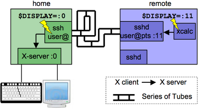
-
On server
-
In file
/etc/ssh/sshd_config
X11Forwarding yes
X11DisplayOffset 10
NOTE Do not forget to reboot
service sshd restart
in progress
Tunneling
We are going to match a local port of our machine to a remote port of the machine to which we are connecting, all through our SSH connection:
$ ssh -f user@monserveur -L 2500:localhost:80 -N
-fto put command in foreground-Ldefine pathfinder `local_port:target_tunnel_output:target_port_output_tunnel"-NDo not execute e re;ote command
For -L, here, the local port 2500 will represent the port 80 of ther remote.
Multiple SSH tunnels can be established at the same time, as long as they don't forward (match) the same ports. For example, here I have an active tunnel on my local port 2500, I can establish a second one on port 2501, to establish a connection with my local STMP server:
$ ssh -f mickael@1.2.3.4 -L 2501:192.168.1.10:25 -N
Proxy SSH
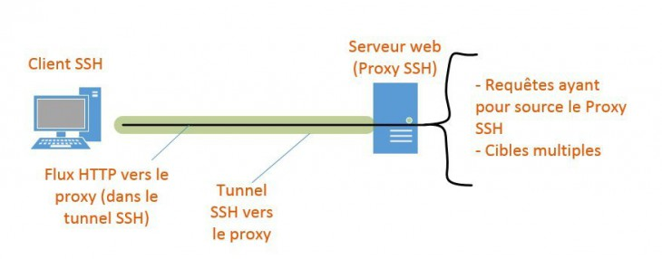
$ ssh -D 12345 mickael@monserveur
Port knocking
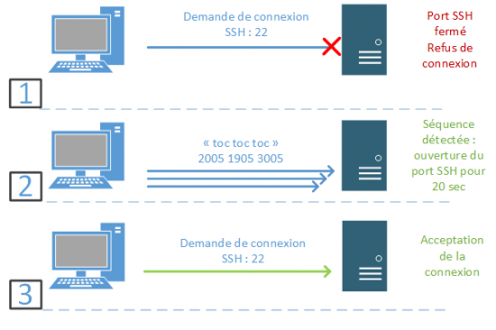
Use tools knockd
$ apt install knockd
Update config. file
- /etc/knockd.conf
[ouvrir_SSH]
sequence = 2005,1905,3005
seq_timeout = 20 command = /sbin/iptables -I INPUT -s %IP% -p tcp --dport 22 -j ACCEPT tcpflags = syn
[fermer_SSH]
sequence = 3005,1905,2005
seq_timeout = 20
command = /sbin/iptables -D INPUT -s %IP% -p tcp --dport 22 -j ACCEPT tcpflags = syn
IMPORTANT
Your server must have closed all unused ports beforehand. More simply with the command
iptables -P INPUT DROP
which will have the effect of closing all the input ports. Be careful with this command all the same if you don't want to cut off your own access.
Ref.
Penetration Testing Application for Android
List for Android penetration testing applications and tools that can be used to aid in penetration testing. The following are the most commonly used applications. Feel free to suggest new applications and tools at comments section below.
List of Android Penetration Testing Tools and Applications
- Magisk Manager - Systemless rooting system.
- EdXposed Manager - Companion Android application for EdXposed.
- BusyBox - Android busyBox.
- SQLite Editor Master - SQLite Editor.
- Root Explorer File Manager for Root Users (Root Required).
- CiLocks - Python script to brute force android lockscreen password.
- Network Analyzer - Network Analyzer for Android.
- Packet Capture - Packet capture/Network traffic sniffer.
- Material Terminal - Terminal for Android.
- Gplaycli Cli Tool to download APK form PlayStore.
Some Reference
- Mobile Pentesting 101 – How to set up your Android Environment
- Root detection and SSL pinning bypass
- Mobile Pentesting 101 – Bypassing Biometric Authentication
- Github - fire1ce/3os.org
- Github - ivan-sincek/android-penetration-testing-cheat-sheet
- Androidre
- Running Android Emulator in a Docker Container
- RedFox Sec tutorial
Red Fox TRaining
Here is some training/tuto to Android pentest from Red Fox Sec blog.
- Exploiting Android WebView Vulnerabilities
- Exploiting Broadcast Receivers
- Exploiting Content Providers
- Android Pentesting with Drozer
- Android Tapjacking Vulnerability
- Broken Cryptography in Android Applications
- Android Pentesting Methodology (Pt. 1)
- Android Pentesting Methodology (Pt. 2)
- Android Pentesting Methodology (Pt. 3)
- Android Root Detection Bypass Using Frida
- SSL Pinning Bypass For Android Using Frida
Exploiting Android WebView Vulnerabilities
https://redfoxsec.com/blog/exploiting-android-webview-vulnerabilities/
Exploiting Broadcast Receivers
https://redfoxsec.com/blog/exploiting-broadcast-receivers/
Exploiting Content Providers
https://redfoxsec.com/blog/exploiting-content-providers/
Android Pentesting with Drozer
https://redfoxsec.com/blog/android-pentesting-with-drozer/
Android Tapjacking Vulnerability
https://redfoxsec.com/blog/android-tapjacking-vulnerability/
Broken Cryptography in Android Applications
https://redfoxsec.com/blog/broken-cryptography-android-applications/
Android Pentesting Methodology
- https://redfoxsec.com/blog/android-pentesting-methodology-part-1/
- https://redfoxsec.com/blog/android-pentesting-methodology-part-2/
- https://redfoxsec.com/blog/android-pentesting-methodology-part-3/
Android Pentesting Methodology
- https://redfoxsec.com/blog/android-pentesting-methodology-part-1/
- https://redfoxsec.com/blog/android-pentesting-methodology-part-2/
- https://redfoxsec.com/blog/android-pentesting-methodology-part-3/
Android Pentesting Methodology
- https://redfoxsec.com/blog/android-pentesting-methodology-part-1/
- https://redfoxsec.com/blog/android-pentesting-methodology-part-2/
- https://redfoxsec.com/blog/android-pentesting-methodology-part-3/
Android Root Detection Bypass Using Frida
Kali in docker for pentest
Mettre Kali en docker afin d'éviter les VMs.
Il faut un docker et docker-compose. Puis définir des alias
Docker-compose.yml
version: "3.3"
services:
kali:
build: .
image: kali_custom
container_name: kali
hostname: kalilinux
environment:
- DISPLAY=$DISPLAY
volumes:
- '/tmp/.X11-unix:/tmp/.X11-unix:rw'
- '/home/user/pentest:/pentest:rw'
network_mode: host
stdin_open: true # docker run -i
tty: true # docker run -t
cap_add:
- NET_RAW
- NET_ADMIN
Dockerfile
FROM kalilinux/kali-rolling
RUN apt update && apt upgrade -y
RUN apt install zsh curl iputils-ping netcat-traditional iproute2 rlwrap \
dnsutils burpsuite nmap socat whois gobuster wireshark-common \
metasploit-framework \
netdiscover \
exiftool file sleuthkit tree \
libssl-dev \
build-essential git libdistorm3-dev yara libraw1394-11 libcapstone-dev capstone-tool tzdata \
# python
python3 python3-dev libpython3-dev python3-pip python3-setuptools python3-wheel \
hashcat \
software-properties-common apt-transport-https \
-y
RUN apt install wget
RUN mkdir tools && wget http://www.caesum.com/handbook/Stegsolve.jar -O stegsolve.jar && chmod +x stegsolve.jar
RUN apt install testdisk proxychains nano -y
# Volatility
# ?pycrypto?
RUN python3 -m pip install -U distorm3 pillow openpyxl ujson pytz ipython capstone yara-python
RUN python3 -m pip install -U git+https://github.com/volatilityfoundation/volatility3.git
# Clean up
RUN apt clean autoclean \
&& apt autoremove --yes \
&& rm -rf /var/lib/{apt,dpkg,cache,log}/ \
&& rm -rf /var/lib/apt/lists/*
RUN echo 'export PATH=/home/username/.local/bin:$PATH' >> ~/.profile
WORKDIR /pentest
CMD ["/bin/zsh"]
Alias
A définir dans .zshrc
...
kali () {
if [[ $(systemctl is-active docker.service) == "inactive" ]]
then
sudo systemctl start docker
fi
xhost +local:docker
pushd /media/user/Backup/kali_docker > /dev/null
docker-compose up -d --build
popd > /dev/null
echo "[+] Kali is running."
echo "[+] docker exec -it kali zsh"
}
kali_shell() {
running=$(docker container inspect -f '{{.State.Running}}' kali 2>/dev/null)
if [ "$running" = "true" ]
then
docker exec -it kali zsh
else
echo "[-] kali container is not running"
fi
}
...
Dev.
Language
| Name | Purpose | Imperative | Object-oriented | Functional | Procedural | Generic | Reflective | Other paradigms | Standardized |
|---|---|---|---|---|---|---|---|---|---|
| Python | Application, general, web, scripting, artificial intelligence, scientific computing | Yes | Yes | Yes | Yes | Yes | Yes | Aspect-oriented | De facto standard via Python Enhancement Proposals (PEPs) |
| Rust | Application, server-side, system, web | Yes | Yes | Yes | Yes | Yes | No | Concurrent | No |
Python
pyenv
Dev. environment setup.
linter
Python Code Quality: Tools & Best Practices
Snippets
Some useful snippet code for CTF
| Folder | Tags | Description |
|---|---|---|
| MovieToken | tesseract Open-CV Pillow Click | Extract text information from movie. |
| MP4 PNG Regular Expression | ||
| GetPostRequestPydantic | Request pydantic | Send and receive request. |
| Logging functools::partial | ||
| FullClickSnippet | Click | Some snippet about click. |
Click
Quelques snippets d'utilisation de click
Requirements
click==8.*
PyYAML==6.*
pytoml==0.1.21
Basic
Utilisation d'un argument positional avec l'aide en ligne.
#!/usr/bin/env python3
"""Basic click demo."""
import click
@click.command(
context_settings={"help_option_names": ["-h", "--help"]},
help="Basic demo.",
)
@click.argument(
"name",
type=click.STRING,
metavar="NAME ",
)
def main(name: str):
"""Main function."""
click.clear()
click.echo(f"Hello {name} (classic)")
click.secho(f"Hello {name} (fg only)", fg="green")
click.secho(f"Hello {name} (bg only)", bg="yellow")
click.secho(f"Hello {name} (both fg & bg)", fg="red", bg="blue")
if __name__ == "__main__":
main() # pylint: disable=E1120
Prompt
Si un parametre est manquant, on utilise un prompt:
#!/usr/bin/env python3
"""Use prompt for parameter."""
import click
@click.command(
context_settings={"help_option_names": ["-h", "--help"]},
help="Basic demo 2: Use prompt if arguments is missing.",
)
@click.option("-n", "--name", prompt="Your name", help="The person to greet.")
@click.option("-c", "--count", default=1, help="number of greetings")
def main(name: str, count: int):
"""Simple program that greets NAME for a total of COUNT times."""
for _ in range(count):
click.echo(f"Hello, {name}!")
if __name__ == "__main__":
main() # pylint: disable=E11
Parametre du type Path
On utilise un parametre dont les proprietes seront verifier mais dont le resultats sera un string pour permetre de créér un Path
#!/usr/bin/env python3
"""Parse and display data with click.file."""
from typing import Dict, List
from string import ascii_letters
import math
from pathlib import Path
from collections import Counter
import click
def convert_size(size_bytes):
"""Convert size in human readable form."""
if size_bytes == 0:
return "0B"
size_name = ("B", "KB", "MB", "GB", "TB")
i = int(math.floor(math.log(size_bytes, 1024)))
if i >= len(size_name):
return "0B"
p = math.pow(1024, i)
s = round(size_bytes / p, 2)
return f"{s} {size_name[i]}"
@click.command(
context_settings={"help_option_names": ["-h", "--help"]},
help="Basic demo 3: Use click.Path arguments.",
)
@click.argument(
"folder_path",
type=click.Path(exists=True, file_okay=False, dir_okay=True),
metavar="MY_DIRECTORY",
)
@click.argument(
"file_path",
type=click.Path(exists=True, file_okay=True, dir_okay=False),
metavar="MY_FILE",
)
def main(folder_path: str, file_path: str):
"""Main function."""
click.clear()
folder_path = Path(folder_path)
file_path = Path(file_path)
# Display directory
files: List[Path] = folder_path.glob("*.py")
files_details: List[str] = [
f"{x.stem} ({convert_size(x.stat().st_size)})" for x in files
]
click.secho("Glob folder", bg="green")
click.echo("\n".join(files_details))
# File
contains: str = file_path.read_text() # pylint: disable=W1514
stat: Dict[str, int] = Counter(contains)
letter_stat = {k: v for k, v in stat.items() if k in ascii_letters}
letter_stat = sorted(letter_stat.items(), key=lambda x: x[1], reverse=True)
click.secho(f"Letters statstics for {file_path.name}", bg="green")
click.echo("\n".join(f"{x[0]} => {x[1]}" for x in letter_stat))
if __name__ == "__main__":
main() # pylint: disable=E1120
Parametre FILE
Parametre de type FILE. Handle en paramtre.
#!/usr/bin/env python3
"""Read JSON file with Click.file."""
from typing import IO
from json import load
import click
@click.command(
context_settings={"help_option_names": ["-h", "--help"]},
help="Basic demo 4: Use click.File arguments.",
)
@click.argument("json_file", type=click.File(mode="r", encoding="utf-8"))
def main(json_file: IO[str]):
"""Main function."""
click.clear()
json_contains = load(json_file)
click.secho("Json contains", bg="green")
click.echo(json_contains)
if __name__ == "__main__":
main() # pylint: disable=E1120
Parametre Enum/Choice
Utilisation d'un Enum custom pour permettre d'exploiter un choice
#!/usr/bin/env python3
""" Parse file according with parser."""
from typing import IO, Optional
from enum import Enum
import json
import csv
import yaml
import click
class ConfigFormat(Enum):
"""Enum format type."""
YAML = 0
JSON = 1
CSV = 2
TXT = 3
class EnumType(click.Choice):
"""Helper to ;ap Enum <=> click.Choice."""
def __init__(self, enum):
self.__enum = enum
super().__init__(enum.__members__)
def convert(self, value, param, ctx):
return self.__enum[super().convert(value, param, ctx)]
@click.command(
context_settings={"help_option_names": ["-h", "--help"]},
help="Basic demo 5: Use click.Choice arguments.",
)
@click.argument("file_path", type=click.File(mode="r", encoding="utf-8"))
@click.option(
"-f",
"--form",
type=EnumType(ConfigFormat),
default=ConfigFormat.JSON.name,
show_default=True,
help="Select format type of input file",
)
def main(file_path: IO[str], form: ConfigFormat):
"""Parse data from file according with format."""
click.clear()
contains: Optional[str] = None
if form == ConfigFormat.JSON:
contains = json.load(file_path)
elif form is ConfigFormat.YAML:
contains = yaml.safe_load(file_path)
elif form == ConfigFormat.CSV:
spamreader = csv.reader(file_path, delimiter=" ", quotechar="|")
contains = ""
for row in spamreader:
contains += f"{', '.join(row)}\n"
else:
contains = "\n".join(file_path.readlines())
click.secho("File contains", bg="green")
click.echo(contains)
if __name__ == "__main__":
main() # pylint: disable=E1120
Utilidation des group
#!/usr/bin/env python
""" Display some usefull tools available by group."""
import time
import click
@click.group()
def cli():
"""Examples of usefull click utils."""
@cli.command()
def editor():
"""Launch an editor."""
message = click.edit("Prepopulated text")
click.echo(f"Your message: {message}")
@cli.command(name="find-app-dir")
def find_app_dir():
"""Find the appropriate application data folder."""
click.echo(click.get_app_dir("part05"))
@cli.command()
@click.option("--lines", default=7, show_default=True)
def paging(lines: int):
"""Page through output."""
data = "\n".join([f"Line {lines}"])
click.echo_via_pager(data)
@cli.command(name="progress-bar")
@click.option(
"--delay",
help="Step progression delay.",
required=True,
default=0.5,
show_default=True,
)
@click.option("--count", help="", default=10)
def progress_bar(count: int, delay: float):
"""Display a progress bar."""
data = range(count)
with click.progressbar(data) as click_bar:
for _ in click_bar:
time.sleep(delay)
if __name__ == "__main__":
cli() # pylint: disable=E1120
Get and Post
Un petit programme pour faire des requetes GET et POST en python.
Ce script est la solution au CTF DGHACK 2023 pour le chall de dev Feed This Dragon
#! /usr/bin/env python
import sys
from typing import Callable, List, Dict
from uuid import uuid1
from functools import partial
from dataclasses import dataclass
from pydantic import BaseModel
import requests
console_handler = logging.StreamHandler()
console_handler.setLevel(logging.INFO)
file_handler = logging.FileHandler("log.txt")
file_handler.setLevel(logging.DEBUG)
logger = logging.getLogger()
logger.setLevel(logging.DEBUG)
logger.addHandler(console_handler)
logger.addHandler(file_handler)
URL = "http://feedthisdragon4.chall.malicecyber.com/api/v1"
TRAP: List[str] = ["bomb"]
FOOD: List[str] = ["veggy", "candy", "burger", "food"]
BOOS: List[str] = ["lilboo", "midboo", "bigboo"]
LIFE: List[str] = ["life"]
FOX: List[str] = ["fox"]
MONEY: List[str] = ["coin", "gem"]
SECRET: List[str] = ["secret", "nyan"]
@dataclass
class NextPost:
"""Next item to click."""
item: str = ""
shop: str = ""
class Achievement(BaseModel):
"""Achievements form."""
acquired: bool
color: str
description: str
name: str
slug: str
uuid: str
class Item(BaseModel):
"""Items data."""
type: str
uuid: str
x: int
y: int
class Upgrade(BaseModel):
"""Upgrade data."""
cost: int
description: str
level: int
name: str
slug: str
uuid: str
class GameResponse(BaseModel):
"""Game response"""
achievements: List[Achievement]
bag: int
coin: int
health: int
hunger: int
hunger_actual: int
hunger_needed: int
items: List[Item]
level: int
max_health: int
upgrades: List[Upgrade]
uuid: str
def format_header(*, uuid: str, update: str, itemUuid: str = "", shopUuid: str = ""):
"""Format post header."""
header = {
# "Content-Type": "application/json; charset=utf-8",
"Cookie": f"uuid={uuid}",
"Authorization": "mynotsosecrettoken",
"Session": uuid,
"Update": update,
"ItemUuid": itemUuid,
"ShopUuid": shopUuid,
}
return header
def extract_items(game_map: GameResponse) -> Dict[str, List[str]]:
"""Allow to extract items information."""
available_items = {}
for item in game_map.items:
key = item.type
available_items.setdefault(key, []).append(f"[{item.x},{item.y}]")
return available_items
def get_strategy(game_map: GameResponse) -> List[Callable[[GameResponse], NextPost]]:
"""Apply correct strategies."""
strategies: List[Callable[[GameResponse], NextPost]] = []
if not game_map.items:
return strategies
# Map status
not_achieved = [i.slug for i in game_map.achievements if not i.acquired]
# [STRATEGY] Achievement Saw
# saw => Why are those items so far from the screen
if "saw" in not_achieved:
strategies.append(find_item_coordinate)
# [STRATEGY] Achievement 'Secret'
if "secret" in not_achieved:
strategies.append(partial(find_item, SECRET))
# [STRATEGY] Achievement hurt
if "hurt" in not_achieved:
strategies.append(partial(find_item, TRAP))
else:
# [STRATEGY] Kill Boos
strategies.append(partial(find_item, BOOS))
# [STRATEGY] Health
if game_map.health <= 2:
if game_map.coin == 0:
strategies.append(partial(find_item, MONEY))
else:
strategies.append(partial(find_item, LIFE))
strategies.append(partial(upgrades, "Hard"))
# [STRATEGY] Achievement Fatter
if "fatter" in not_achieved or "bigger" in not_achieved:
strategies.append(partial(find_item, FOOD))
strategies.append(partial(upgrades, "Feed"))
# [STRATEGY] Achievement money
if "gold" in not_achieved:
strategies.append(partial(find_item, MONEY))
strategies.append(partial(upgrades, "Greed"))
if game_map.bag < 10000:
strategies.append(partial(upgrades, "Bag"))
logger.debug("strategies =>")
for idx, strategy in enumerate(strategies):
logger.debug(f"\t- [{idx}] {strategy}")
return strategies
def find_item_coordinate(game_map: GameResponse) -> List[NextPost]:
"""Strategy find item."""
next_list: List[NextPost] = []
for item in game_map.items:
if item.x > 100 or item.y > 100:
return [NextPost(item=item.uuid)]
return next_list
def find_item(ref_label: List[str], game_map: GameResponse) -> List[NextPost]:
"""Strategy find item."""
next_list: List[NextPost] = []
for item in game_map.items:
if item.type in ref_label:
next_list.append(NextPost(item=item.uuid))
if not next_list:
logger.debug(f"\tNothing like {ref_label}.")
return next_list
def upgrades(ref_label: str, game_map: GameResponse) -> List[NextPost]:
"""Strategy Upgrade."""
for item in game_map.upgrades:
if item.name == ref_label:
return [NextPost(shop=item.uuid)]
logger.debug("\tNothing like %s", ref_label)
return []
def get_map_info(cur_game: GameResponse):
"""Display map info."""
logger.info("\n")
logger.info("-" * 20)
logger.info(f"Level: {cur_game.level}")
logger.info(f"Health: {cur_game.health}")
logger.info(f"Hunger: {cur_game.hunger}")
logger.info(f"Hunger actual: {cur_game.hunger_actual}")
logger.info(f"Hunger needed: {cur_game.hunger_needed}")
logger.info(f"bag => {cur_game.bag}")
logger.info(f"coin => {cur_game.coin}")
available_items = extract_items(game_map=cur_game)
formatted = "| ".join(
[f"{k} ({len(v)}): {','.join(v)}" for k, v in available_items.items()]
)
logger.debug(f"Items: {formatted}")
# logger.debug(f"Upgrades: {cur_game.upgrades}")
achievements: List[str] = [
f"{achievement.slug}"
for achievement in cur_game.achievements
if not achievement.acquired
]
logger.info(f"Achievements: {'| '.join(achievements)}")
return len(achievements) == 0
def get_request(*, uuid: str, update: str) -> List[NextPost]:
"""Get request to send."""
# Send POST request with JSON data using the json parameter
response = requests.get(URL, headers=format_header(uuid=uuid, update=update))
if response.status_code != 200:
logger.error("Error invalid request")
# Print the response
cur_game = None
try:
cur_game = GameResponse.model_validate(response.json())
logger.debug(response.json())
except:
logger.error("!!!!!!!!!!!!!! Crash !!!!!!!!!!!!!!!")
logger.error(response.json())
sys.exit(1)
# Display map
done = get_map_info(cur_game)
if done:
logger.info("<<<<<<<<<<<<<<<<<<<<<<< DONE >>>>>>>>>>>>>>>>>>>>>>>>>")
return []
# Next pos list
next_list: List[NextPost] = []
# done if dead
if cur_game.health <= 0:
logger.error("!!! You dead !!!")
return sys.exit(1)
strategies = get_strategy(cur_game)
for idx, fct in enumerate(strategies):
logger.debug(f"=> Apply {fct}")
if next_pos := fct(cur_game):
logger.debug(f"\tSuccess {idx}")
next_list += next_pos
else:
logger.debug(f"\tFailed {idx}")
return next_list
def post_request(*, uuid: str, itemUuid: str, shopUuid: str):
"""Post request."""
# Send POST request with JSON data using the json parameter
response = requests.post(
URL,
headers=format_header(
uuid=uuid, update="true", itemUuid=itemUuid, shopUuid=shopUuid
),
)
logger.debug(f"Post Answer => {response.json()}")
if __name__ == "__main__":
NEW_GAME_UUID = str(uuid1())
# Init party
logger.info("[Initialize new gameStart new game]")
_ = get_request(uuid=NEW_GAME_UUID, update="false")
logger.info("[Start challenge]")
while True:
next_post_list = get_request(uuid=NEW_GAME_UUID, update="true")
if not next_post_list:
continue
# _ = input("Post request\n")
logger.debug(f"Post Items => {next_post_list}")
for pos in next_post_list:
post_request(uuid=NEW_GAME_UUID, itemUuid=pos.item, shopUuid=pos.shop)
Token from movie
Mise en place des dépendances
$ sudo apt update
$ sudo apt install tesseract-ocr
$ sudo apt install libtesseract-dev
$ sudo apt install tesseract-ocr-eng
$ pip install Pillow
$ pip install pytesseract
$ pip install wand
$ pip install opencv-python
Extraction d'un token à partir d'une video
#! /usr/bin/env python3
import re
import sys
from PIL import Image
import pytesseract
from wand.image import Image as Img
from pathlib import Path
import cv2
import click
# Pattern to be find
PATTERN = re.compile(r"([0-9]{4})", re.IGNORECASE)
def rm_tree(pth: Path):
"""Remove recursive of folder."""
if not pth.exists():
return
for child in pth.glob("*"):
if child.is_file():
child.unlink()
else:
rm_tree(child)
pth.rmdir()
def setup(movie_path: Path):
"""Clean temporary folder"""
rm_tree(movie_path)
movie_path.mkdir()
def files(movie_path: Path, working_area: Path) -> cv2.VideoCapture:
"""Read video."""
setup(working_area)
# specify the source video path
src_vid = cv2.VideoCapture(str(movie_path))
return src_vid
def process(src_video: cv2.VideoCapture, rate, working_area: Path):
"""Process video."""
# Check if file is open
if not src_video.isOpened():
print("[!] Video stream is closed")
sys.exit(1)
# Integer name file
index = 0
while src_video.isOpened():
ret, frame = src_video.read()
if not ret:
break
# name each frame and save s png
name = Path(working_area) / Path(f"frame{index}.png")
#
# Save every rate th
if not (index % rate):
cv2.imwrite(str(name.absolute()), frame)
index += 1
if cv2.waitKey(10) & 0xFF == ord('q'):
break
src_video.release()
cv2.destroyAllWindows()
def get_token(working_area: Path) -> str:
"""Looking for token."""
for pic in Path(working_area).glob("*.png"):
cur_pic = Image.open(str(pic.absolute()))
text = pytesseract.image_to_string(cur_pic, lang='eng')
if "code" in text:
text = text.replace("\n", "")
res = PATTERN.findall(text)[0]
return f"{res}"
return ""
@click.command(
context_settings={"help_option_names": ["-h", "--help"]},
help="Extract token from pictures.",
)
@click.argument(
"movie_path",
type=click.Path(exists=True, file_okay=True, dir_okay=False),
metavar="MOVIE_PATH",
)
@click.option(
"--rate",
default=100,
help="Rate of picture to extract text.",
show_default=True
)
@click.option(
"--working_area",
type=click.Path(exists=False, file_okay=False, dir_okay=True),
default="image_frames",
help="Temporary folder.",
show_default=True
)
def find_token(movie_path: str, rate: int, working_area: str):
working_area = Path(working_area)
vid = files(Path(movie_path), working_area)
process(vid, rate, working_area)
print("[+] Token for %s => '%s'", movie_path, get_token(working_area))
if __name__ == "__main__":
find_token() # pylint: disable=E1120
Utilisation
> ./script.py --rate 10 ./movie.mp4
Token for ./movie.mp4 => 'XXXX'
Rust
Setup rust 💻
- Install the Rust toolchain.
- (recommended) Install the rust-analyzer extension for your code editor.
- (optional) Install a native debugger. If you are using VS Code, CodeLLDB is a good option.
Use VS Code to debug your code
- Install rust-analyzer and CodeLLDB.
- Set breakpoints in your code.
- Click Debug next to the unit test or the main function.
- The debugger will halt your program at the specific line and allow you to inspect the local stack.
Useful Tools
Useful crates
-
itertools: Extends iterators with extra methods and adaptors. Frequently useful for aoc puzzles.
-
regex: Official regular expressions implementation for Rust.;
-
chrono: The most comprehensive and full-featured datetime library, but more complex because of it.
-
serde: De facto standard serialization library. Use in conjunction with sub-crates like serde_json for the specific format that you are using.
-
anyhow: Provides a boxed error type that can hold any error, and helpers for generating an application-level stack trace.
-
thiserror: Helps with generating boilerplate for enum-style error types.
Crates
A curated list of popular crates can be found on blessred.rs.
Snippets
Some useful snippet code from AOC (Advent Of Code)
| Folder | Tags | Description |
|---|---|---|
| Example | Module 1 | BlaBlaBla. |
| Theme |
Exemple of error management
Good reference: Designing error types in Rust
TCP Echo project
Project
├── Cargo.toml
├── index.html
└── src
├── error.rs
├── lib.rs
└── main.rs
- Cargo.toml
[package]
name = "tcp_echo"
version = "0.1.0"
edition = "2021"
[dependencies]
- index.html
<!DOCTYPE html>
<html lang="en">
<head>
<meta charset="utf-8">
<title>Rust</title>
</head>
<body>
<h1>Hello World!</h1>
</body>
</html>
- error.rs
#[derive(Debug)]
pub enum AppError {
Io(std::io::Error),
Utf8(std::string::FromUtf8Error),
General(String),
}
impl std::fmt::Display for AppError {
fn fmt(&self, f: &mut std::fmt::Formatter<'_>) -> std::fmt::Result {
match self {
AppError::Io(e) => write!(f, "IO error: {}", e),
AppError::Utf8(e) => write!(f, "UTF-8 error: {}", e),
AppError::General(s) => write!(f, "General error: {}", s),
}
}
}
impl From<std::io::Error> for AppError {
fn from(e: std::io::Error) -> Self {
Self::Io(e)
}
}
impl From<std::string::FromUtf8Error> for AppError {
fn from(e: std::string::FromUtf8Error) -> Self {
Self::Utf8(e)
}
}
pub type AppResult<T> = Result<T, AppError>;
- lib.rs
pub mod error;
- main.rs
use std::io::BufReader;
use std::io::prelude::*;
use std::net::TcpListener;
use std::net::TcpStream;
use tcp_echo::error::AppResult;
fn main() {
match start_server("127.0.0.1:8080") {
Ok(_) => println!("Server ending"),
Err(_) => println!("Server failed"),
}
}
fn start_server(url: &str) -> AppResult<()> {
let listener = TcpListener::bind(url)?;
println!("Listening on port 8080");
for stream in listener.incoming() {
let stream = stream?;
println!("Connection established!");
handle_connection(stream);
}
Ok(())
}
fn handle_connection(mut stream: TcpStream) {
let buf_reader = BufReader::new(&mut stream);
let http_request: Vec<_> = buf_reader
.lines()
.map(|result| result.unwrap())
.take_while(|line| !line.is_empty())
.collect();
println!("Request: {:#?}", http_request);
}